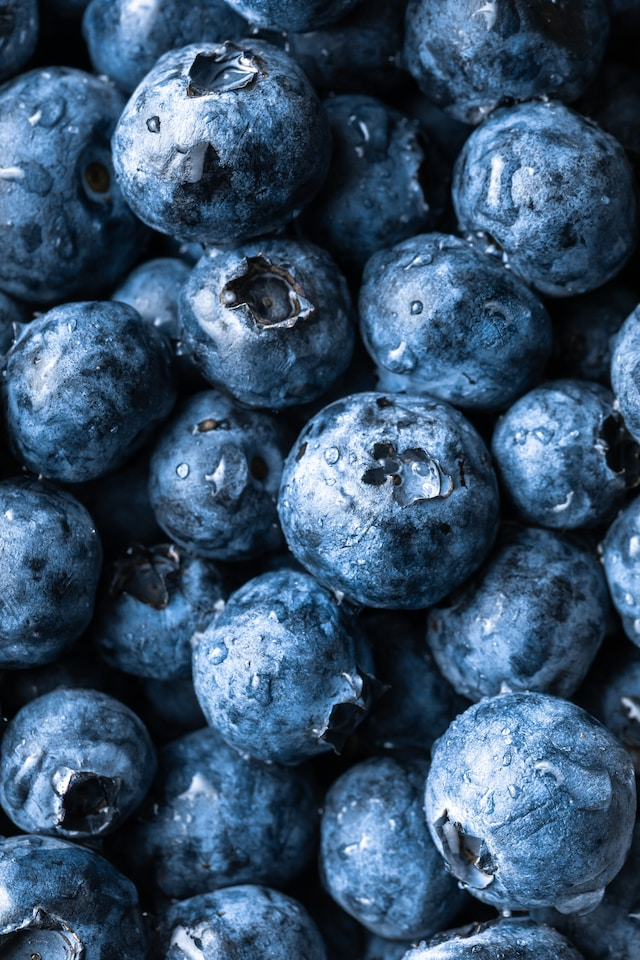

All Natural Berries
Brighton Farm is a Certified Organic Grower that grows and sells different kinds of berries.
Organic farming, also known as ecological farming or biological farming, is an agricultural system that uses fertilizers of organic origin. Growing and eating organic food supports human and environmental health while fostering thriving local economies.
Organic agriculture does not permit the use of synthetic chemical pesticides or herbicides. Most of the pesticides that are allowed in organic are derived from natural products, are low in toxicity and break down rapidly.
Order Online
We are committed to high-quality products that make as little impact as possible on the planet during the production, use, and disposal process. Thank you for shopping with us!
Some of Our Products
Strawberry
The garden strawberry are cultivated worldwide for their fruit. The fruit is widely appreciated for its characteristic aroma, bright red color, juicy texture, and sweetness. It is consumed in large quantities, either fresh or in such prepared foods as jam, juice, pies, ice cream, milkshakes, and chocolates.
To maintain top quality, berries are harvested at least every other day. The berries are picked with the caps still attached and with at least half an inch of stem left. Strawberries need to remain on the plant to fully ripen because they do not continue to ripen after being picked. Rotted and overripe berries are removed to minimize insect and disease problems. The berries do not get washed until just before consumption.
Blueberry
This popular small fruit bears plenty of berries that are delightful when eaten fresh, used in pies, muffins, or pancakes, or added as a fruit topping for breakfast cereals.
Blueberry fruit ripens over a two-month period after bloom. This will vary with the cultivar, weather conditions and plant vigor.
Raspberry
The fruit is harvested when it comes off the receptacle easily and has turned a deep color (red, black, purple, or golden yellow, depending on the species and cultivar). This is when the fruits are ripest and sweetest.
Raspberries are grown for the fresh fruit market into individually quick frozen fruit, purée, juice, or as dried fruit used in a variety of grocery products such as raspberry pie. Raspberries need ample sun and water for optimal development.